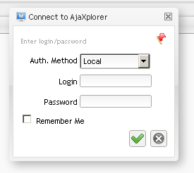

Encapsulate the usage of other auth.* drivers, to allow multiple sources of users. Users can choose at login time with wich method to authenticate themselves.
Here is a sample code that would allow the choice between the standard login (for example for admin user) and a predefined auth.ftp config that queries an FTP server to check if the user credential is recognized or not :
"AUTH_DRIVER" => array(
"NAME" => "multi",
"OPTIONS" => array(
"MASTER_DRIVER" => "serial",
"TRANSMIT_CLEAR_PASS" => true,
"USER_ID_SEPARATOR" => "_-_",
"DRIVERS" => array(
"serial" => array(
"LABEL" => "Local",
"NAME" => "serial",
"OPTIONS" => array(
"LOGIN_REDIRECT" => false,
"USERS_FILEPATH" => "AJXP_DATA_PATH/plugins/auth.serial/users.ser",
"AUTOCREATE_AJXPUSER" => false,
"TRANSMIT_CLEAR_PASS" => false )
),
"ftp" => array(
"LABEL" => "Remote FTP",
"NAME" => "ftp",
"OPTIONS" => array(
"LOGIN_REDIRECT" => false,
"REPOSITORY_ID" => "dynamic_ftp",
"ADMIN_USER" => "admin",
"FTP_LOGIN_SCREEN" => false,
"AUTOCREATE_AJXPUSER" => true,
"TRANSMIT_CLEAR_PASS" => true,
)
)
)
)
),
Note the unusual LABEL option added in the sub-drivers definition, that will be used as a display label in the gui login chooser. If it's not set, the selector would simply display the driver name (serial / ftp here). Note also that some options cannot be mixed :

The USER_ID_SEPARATOR is important, as it is used to store locally the users data with a discrimination on where they come from. Here, once logged, an FTP user "mylogin" would in fact be handled by the system as "ftp_-_mylogin". Thus if the serial driver already has a "mylogin" user, they are not mixed. Be aware that some folders can be created with this complex user name (for example if you use the AJXP_USER keyword for some repositories), and for this reason the separator must be compliant with folder names! The first implementation of this plugin led to a bug because the separator used (::) was making any directory creation fail.